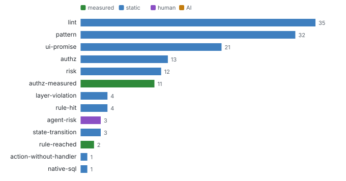
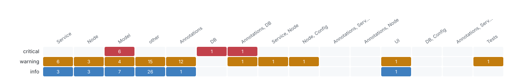

Evidence ledger
Findings and gaps · Every claim with how it was found (static, measured, AI, human), its status and evidence, and every open question with who can answer it.
142 findings (13 measured, 126 static, 3 human, 0 AI) · 21 questions, 19 open.


Open questions by who can answer them
measured (11): Does anything on the server enforce "TravelStatus != A" for Travel.acceptTravel: another h? · Does anything on the server enforce "5 fields controlled by TravelStatus.fieldControl" for? · Does anything on the server enforce "TravelStatus != X" for Travel.rejectTravel: another h? · Does anything on the server enforce "hidden when [object Object]" for Booking: another han? · Does anything on the server enforce "6 fields controlled by to_Travel.TravelStatus.fieldCo? · Does anything on the server enforce "hidden when [object Object]" for Booking: another han? · … 5 more
ai (2): Slice S01 Travel in AnalyticsService, TravelService: answer the 10 fixed questions (entry ? · Which entities and fields does this SQL read and write, and under which condition?
human (6): How critical is AnalyticsService for the business (1 to 5)? · How critical is TravelService for the business (1 to 5)? · Is the draft rule hard-coded-currency right here (srv/analytics-service.cds:24), and shoul? · Is the draft rule null-deref-in-guard right here (srv/travel-service.ts:105), and should i? · Is the draft rule commented-out-grant right here (srv/analytics-service.cds:5), and should? · Is the draft rule max-plus-one-id right here (srv/travel-service.ts:18), and should it be ?
| Gap | Kind | Priority | Status | Can answer |
|---|---|---|---|---|
| G-enforcement-elsewhere-070d05fefb | enforcement-elsewhere | high | open | measured, ai |
| G-enforcement-elsewhere-270962cf80 | enforcement-elsewhere | high | open | measured, ai |
| G-enforcement-elsewhere-33ac0981f8 | enforcement-elsewhere | high | open | measured, ai |
| G-enforcement-elsewhere-464979f637 | enforcement-elsewhere | high | open | measured, ai |
| G-enforcement-elsewhere-47e9076f20 | enforcement-elsewhere | high | open | measured, ai |
| G-enforcement-elsewhere-48811c9e6d | enforcement-elsewhere | high | open | measured, ai |
| G-enforcement-elsewhere-bb8f6ea400 | enforcement-elsewhere | high | open | measured, ai |
| G-slice-review-e4efc65cb2 | slice-review | high | open | ai |
| G-authz-unclear-0d3b5fd55f | authz-unclear | medium | resolved | measured, ai |
| G-authz-unclear-c16e566bdc | authz-unclear | medium | open | measured, ai |
| G-authz-unclear-d84c33237f | authz-unclear | medium | open | measured, ai |
| G-authz-unclear-f4a6aef25e | authz-unclear | medium | resolved | measured, ai |
| G-enforcement-elsewhere-13105b2034 | enforcement-elsewhere | medium | open | measured, ai |
| G-handler-missing-51b1ab34cc | handler-missing | medium | open | measured, ai |
| G-business-criticality-d44cbff21d | business-criticality | low | open | human |
| … 6 more rows in the data file |
Full data: findings.jsonl, gaps.jsonl (JSON Schemas in schema/).
Deeper: findings.jsonl · gaps.jsonl
Read from: run/findings/findings.jsonl, run/findings/gaps.jsonl · all products